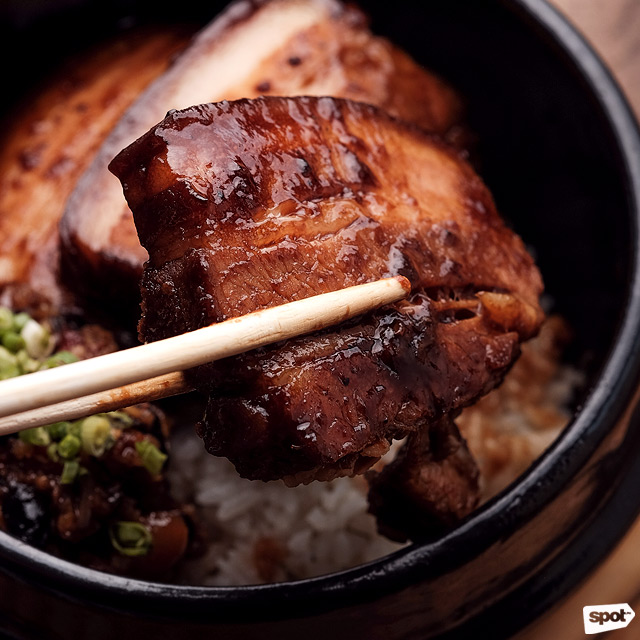

Loco Manuk, located in Poblacion, Makati offers that uniquely flavourful and delectable Latin Asian taste. Our menu showcases our Chicken and Churros, Baos, Ribs, and more. The Loco Manuk experience is not complete without the chicken cooked over a wood fire with a light smoke of caimito and mahogany wood. We also serve specialty cocktails. This wicked twist and the rest of the menu was crafted by our Peruvian Chef, Danny Parreno.
BESTSELLERS

Red Braised Pork Ribs Rice Bowl